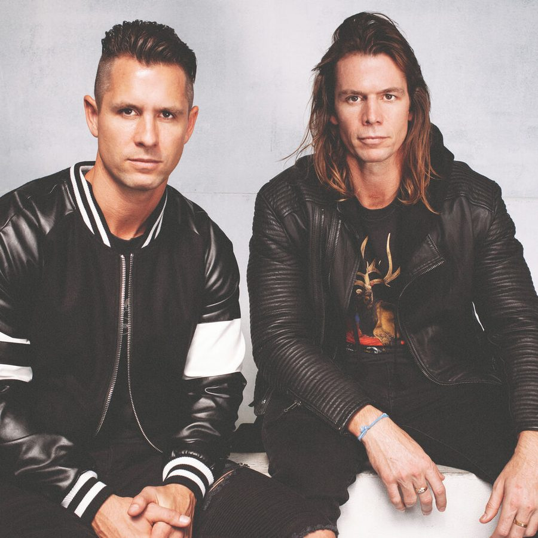

The Stafford Brothers [Audio]: Kicking it Queensland style


STREAMING AUDIO INTERVIEW
The Stafford Brothers are no strangers to success. Whichever clubs they’ve rocked up to perform at over the past few years, punters have followed and the Brothers have extended their reach well beyond their home of the Gold Coast to play regularly right up and down the East Coast and beyond. But things stepped up a notch last year when they rose to take the #3 position in the inthemix50 DJ poll. It was the highest ever ranking for a DJ in their state, and all of a sudden the Brothers became unofficial representatives of the burgeoning dance music scene in Queensland: whether it was a job they ever signed up for, or not!
And 2008 is looking like it’ll be even bigger for the Staffords: they just got back from an extended trip overseas that saw them playing gigs all over Europe, US and Canada, as well as working with the big names to lay down some new tracks. And now they’re back, they’re heading straight into a national tour for Electro House Sessions 2, which sees them working once again with the ever-present Ministry of Sound. And they’ve delivered a bangin’ mix: while in some quarters there’s a perception that the Staffords play straightforward commercial house, the CD shows that they’re able to move from the upfront selections to the darker, dirtier material, in a fashion that straddles the underground and the mainstream quite effectively.
So what’s it like to be kicking it Queensland style? ITM’s Angus Paterson chats with Matt Stafford in order to find out.
Electro House Sessions 2, mixed by Tommy Trash and The Stafford Brothers, is out now through Ministry of Sound/Universal. You can catch the guys on their national launch tour throughout April and May:
Sat 5 Apr – Gold Coast, Platinum – Tommy Trash & The Stafford Brothers
Fri 11 Apr – Canberra, Academy – Tommy Trash
Fri 11 Apr – Albury, One nightclub – The Stafford Brothers
Sat 12 Apr – Brisbane, Family – Tommy Trash & The Stafford Brothers
Sun 13 Apr – Parramatta, Roxy – Tommy Trash & The Stafford Brothers
Wed 16 Apr – Terrigal, Key Largo – Tommy Trash & The Stafford Brothers
Fri 18 Apr – Auckland, Met & Code – Tommy Trash & The Stafford Brothers
Sat 19 Apr – Geelong, Club 4 Play – Tommy Trash
Sat 19 Apr – Burnie, Sirroco’s – The Stafford Brothers
Thu 24 Apr – Coffs Harbour, Plantation – Tommy Trash
Thu 24 Apr – Wollongong, Bustin’ at Cooney’s – The Stafford Brothers
Sat 26 Apr – Airlie Beach, Mass Nightclub – Tommy Trash
Sat 26 Apr – Cairns, Velvet Underground – The Stafford Brothers
Fri 2 May – Newcastle, Kings St Hotel – Tommy Trash
Sat 3 May – Bundaberg, Central Hotel – Tommy Trash
Sat 3 May – Traralgon, Inferno – The Stafford Brothers
Fri 9 May – Noosa, Rolling Rock – Tommy Trash & The Stafford Brothers
Sat 17 May – Launceston, TBC – The Stafford Brothers
Check out this clip of the Staffords and Tommy on last year’s ‘Electro House Sessions’ launch tour at Family in Brisbane: